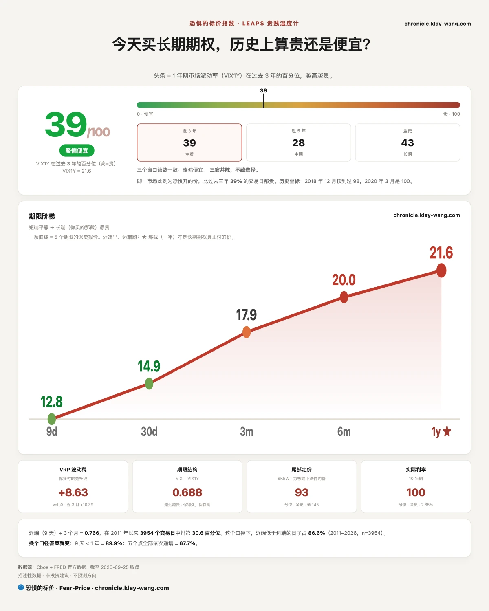
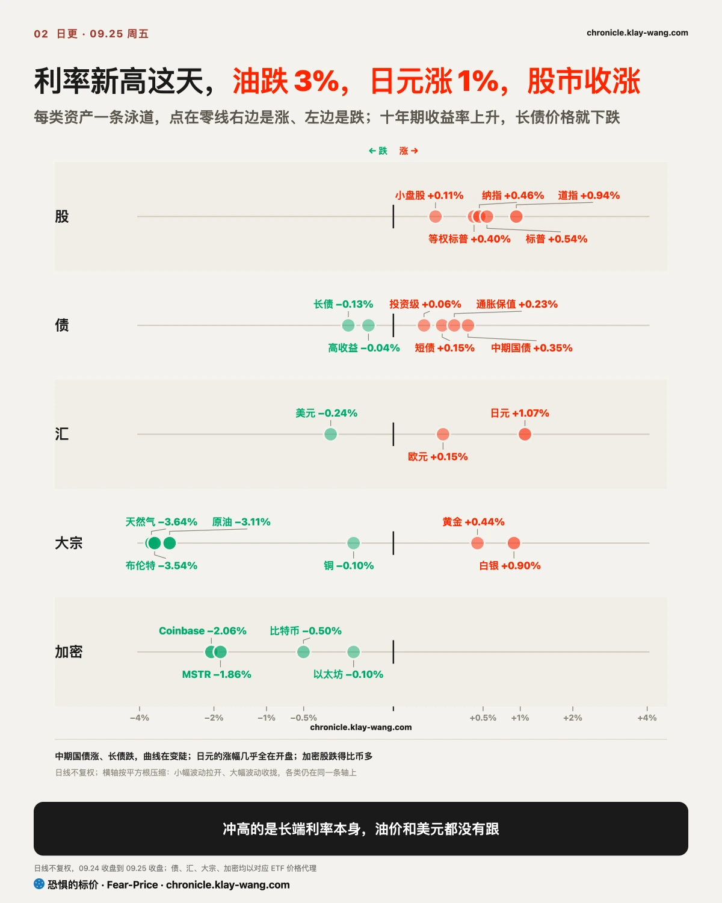
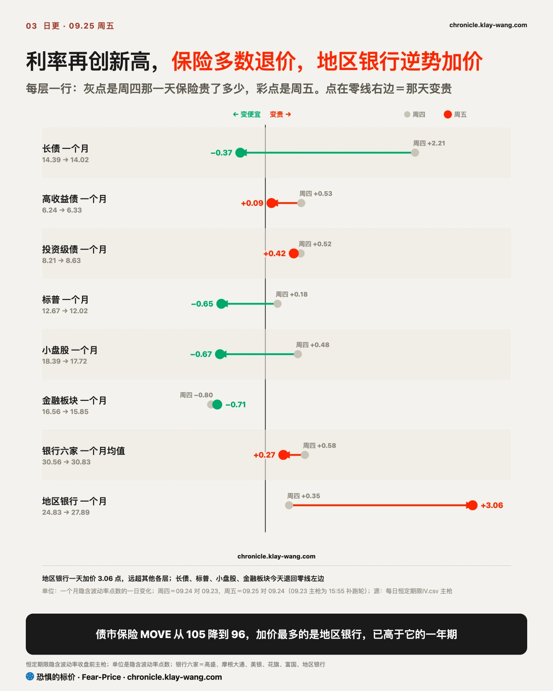
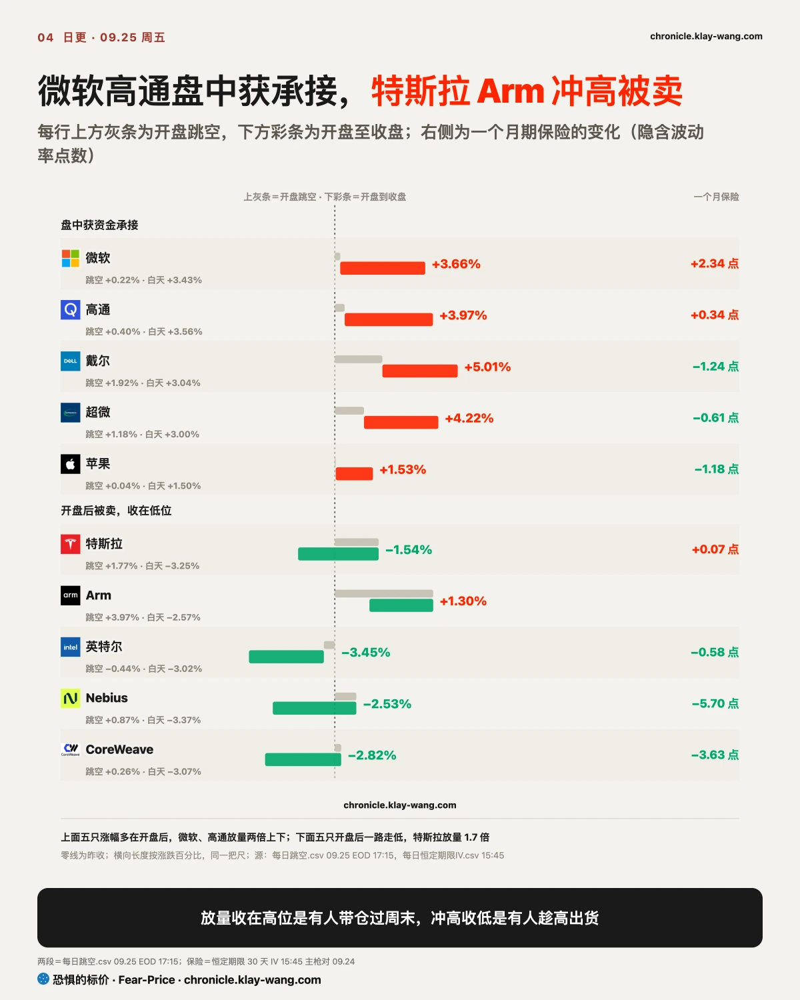
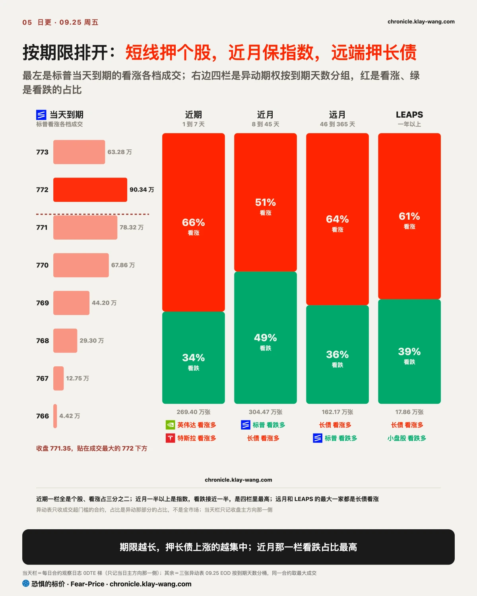
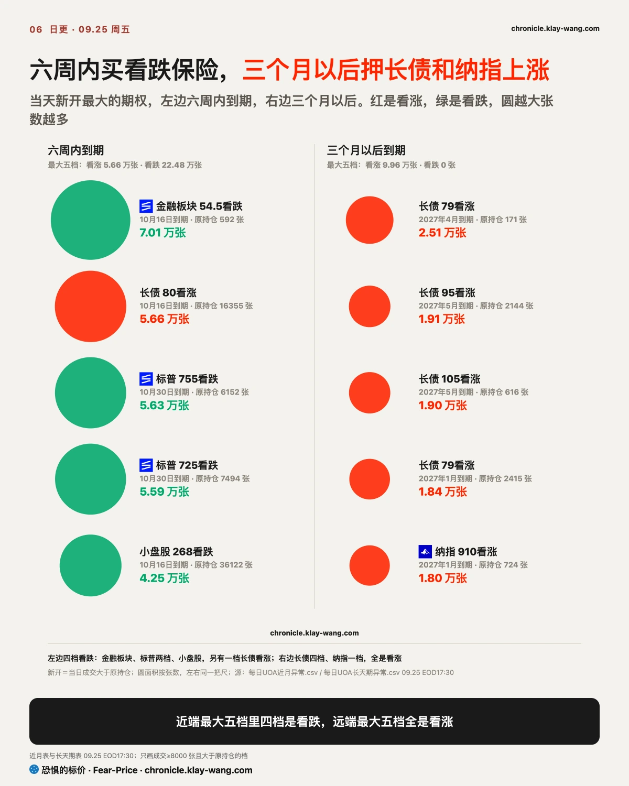

恐惧的标价指数（Fear-Price Index）· 2026-09-25 · 读数 39.0/100：一年期波动率 VIX1Y 为 21.60，处于近三年第 39.0 百分位，高即贵。逐日台账与口径 → chronicle.klay-wang.com · 转载注明：恐惧的标价指数 · Fear-Price
恐惧的标价指数由周四的 43.3 降至 39.0，一年期波动率 VIX1Y 从 21.82 降至 21.60，一个月的 VIX 从 15.67 降至 14.87。十年期利率收在 2007 年以来最高的这一天，为股票买一年保护的价钱反而下降，股市没有把利率新高当成新的风险。对你来说，为股票组合配一年期保护比周四便宜。
K 指数 2.488，高于周四定稿的 2.281。越接近 1，说明越多人把担忧落实到买保护上。恐贪读数偏向恐惧，买保护的钱却在减少，嘴上悲观、手上没付钱。按今天的恐贪读数，K 要跌破 1，VIX 需要升到 37 以上。历史在 chronicle.klay-wang.com/kindex，指数在 chronicle.klay-wang.com/fear-price。


美国十年期国债收益率周五收于 5.18%，为 2007 年 7 月以来最高，三十年期收于 5.50%。推手是家庭的通胀预期：密歇根大学 9 月调查终值显示，家庭预期未来一年物价上涨 4.6%，为 6 月以来最高。同一天原油基金跌 3.1%，油价下跌、收益率照样上升，说明推高利率的已经不只是能源。家庭相信物价会继续涨，就会提前消费、要求加薪，美联储更难停止加息。

利率涨得慢了，保险就降价。十年期周三一天升约 15 个基点，周五只升 2 个，利率保险 MOVE 从 105 降到 96，一天便宜 8%。保险的价钱跟着波动幅度走，不跟方向走。
地区银行走了反方向。地区银行基金一个月期保险从 24.83 升至 27.89，高于它的一年期 25.91；六家银行的一个月期保险全部高于一年期，金融板块基金一档平值看跌成交 70097 张，此前持仓只有 592 张。银行股价当天在涨，是持有者拿着股票给接下来几周加保。你手里如果有地区银行股，眼下一个月期保护比一年期贵约 2 个点。地区银行持有大量长期债券，利率上升这些债券就跌价，2023 年硅谷银行出事走的就是这条路。
我的判断是，利率冲击最先落地的会是地区银行，科技股排在后面。如果 10 月 2 日前地区银行一个月期保险回落到一年期之下，或者这批金融看跌期权下周一的持仓留存不到一半，这个判断就站不住。八月月刊写过市场为一次加息付了钱、没为一串付钱，推翻条件是 MOVE 冲上近三年第 90 百分位；本周最高只到第 71.7 百分位，这条判断结清，判对了。
美国债市和股市是同一个量级：按美国证券业协会的统计，2025 年底美国存量债券约 61.2 万亿美元，美股总市值约 68.9 万亿；全球也是债 160.7 万亿、股 157.8 万亿，几乎一样大。债市的分量不在规模，在于它是所有资产的定价尺子和抵押品。
债影响股有三条路。第一条是折现：十年期收益率是给股票估值的折现率，它一升，远期的现金流就不值钱，现金流远、靠分红吸引人的资产先受伤，这一周公用事业跌 3.9%，是跌得最多的板块。第二条是比价：标普 500 的市盈率约 24.9 倍，折成盈利收益率约 4.0%，比十年期的 5.18% 低 1.2 个百分点，买股票拿到的盈利比放进国债拿的利息还少，股价只能靠盈利增长撑住。第三条是抵押：国债是金融体系最主要的抵押品，利率保险急涨时，押着国债加杠杆的资金要补保证金，只能去卖别的资产；美银策略师盯的扩散线是两条同时破：MOVE 站上 125，全球金融股指数跌破 125；周五 MOVE 是 96。
出了事，先救的也是债市。2020 年 3 月美联储直接买国债，2022 年英国养老金爆仓时英国央行出手买英国国债，2023 年硅谷银行出事后美联储按面值接收国债做抵押。本周财政部也在回购长债，官方说法是改善流动性，这次买回的比例比两周前低。对你来说，股市的底往往要等债市先稳住才出现，看 MOVE 比看股价更早。
回到标题的两个问题。危机眼下还没到：美银盯的那条线要 MOVE 站上 125，周五是 96，股票和债券两边的保险都在降价。谁对谁错，要看通胀：债市在为家庭 4.6% 的通胀预期定价，十年期升到 5.18%；股市在为盈利增长定价，标普的盈利收益率比十年期还低 1.2 个点。通胀预期降不下来，债市是对的，要让步的是股票的估值；通胀回落、利率跟着下来，股市就是对的，周五长债基金里押利率回落的那批看涨期权也押在这一边。

周五的个股走出了两种形态。开盘价主要反映隔夜消息，开盘后的走势才是真实买卖；放量上涨又收在全天高位，是有人愿意带着仓位过周末，放量冲高却收在低位，一般是有人趁高出货。
微软涨 3.7%，成交量是前一日的 2.3 倍，在我们跟踪的 47 只里放量最多，收在全天高位，收盘价为去年 11 月初以来最高。本周三它发布了把聊天、编程和自动执行任务整合在一起的 Copilot 超级应用，Oppenheimer 随后把目标价上调到 570 美元。高通涨 4.0%，成交量接近前一日两倍，开盘只高 0.4%，涨幅几乎全在盘中。周四它和苹果续签全球专利授权，当天股价反而跌 1.5%，周五买盘回来，一周涨 13.7%，是我们跟踪的票里本周最多的。
特斯拉走了反方向。它开盘高 1.8%，随后从开盘价回落 3.3%，收跌 1.5%，成交量是前一日的 1.7 倍，收在全天区间的下四分之一。消息面上，Semi 卡车在内华达开始量产，但没有给出交付和盈利时间表，欧洲的 FSD 审批也推迟了。英特尔低开后一路走低，跌 3.5%，收在全天低点附近，今年以来已经涨了两倍多，这是获利了结；它的一个月期保险这一周贵了 10 个点，全表最多。你手里如果有特斯拉或英特尔，下周能不能收回周五的开盘价，决定这次回落是出货还是换手。
AI 硬件和出租算力的公司也在分开定价。戴尔涨 5.0%、超微涨 4.2%，CoreWeave、Nebius 缩量下跌，保险也在降。高盛测算六家云厂 2026 到 2027 年资本开支约 1.73 万亿美元，回报要到 2028 年以后；摩根士丹利认为内存和硬盘短缺可能持续五年以上。卖设备的订单已在手，租算力的要先投钱再收回来，市场先奖励了前者。Meta 跌 3.3%，9 月 21 日押 Connect 大会的看涨持仓只留下 46.8%，那条押事件的判断勉强站住。
加密股跌得比币多。比特币 ETF 跌 0.5%，MSTR 跌 1.9%，Coinbase 跌 2.1%。但 MSTR 当天的看涨期权权利金有 1.15 亿美元，看跌只有 970 万，跌的这一天有人在押它反弹。美光 9 月 30 日公布财报，一周内到期、剔除当天到期的期权里，看涨的期权权利金是看跌的 4.7 倍，最大一笔更像老仓位换手。

把周五的异动期权按到期排开，是一条清楚的阶梯。当天到期的，标普 500 ETF 收 771.35，贴在成交最大的 772 看涨下方，收盘价被钉在成交最密的行权价附近。一周内到期的全是个股，看涨占三分之二；八到四十五天的一半以上是指数，看跌接近一半；再往后，长债看涨占主导。

纳指期权在两个期限上方向相反。近端，10 月 30 日到期、行权价比现价低 2.6% 的纳指看跌成交 39074 张，是此前持仓的 19 倍，十月要过非农、CPI 和财报季，这是给这段路买的保险。远端，纳指三个月以上到期的看涨成交 45714 张，看跌只有 10165 张，前一天正好反过来；纳指 ETF 收 744.50，离 6 月高点只差 0.6%。你手里如果有纳指，近端有人按下跌 2.6% 买了保险，远端的钱押的是 2027 年。
长债基金三个月以上到期的看涨周五成交 30.3 万张，为 9 月以来单日最多，十年期收在 19 年新高的这一天，押利率回落的资金下了本月最大的一笔。周四写到的英伟达 2028 年 460 美元看涨，过夜后留下当天成交的 92%，是新开的长期仓位，判断成立。
手里有债券或债券基金的：利率还在上行，但速度在放慢，MOVE 一天回落 8%。远端有资金押利率一两年内回落，押的是终点，路上的颠簸还在。
手里是指数基金的：股指收涨，一年期和一个月期的保护都比周四便宜。十月到期的指数看跌成交集中，已经有人在为十月这段路加保。
手里有大型科技股的：微软、苹果放量收在高位，高通放量走强；特斯拉、Arm 冲高被卖，英特尔低开低走。同一天两种走法，看的是开盘之后谁在买，不是隔夜的消息。
手里有银行股的：股价涨，一个月期保护却比一年期贵，地区银行最明显。接下来几周要看地区银行的短期保险能不能回落到一年期之下。